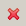
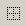
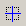
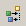
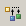
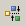
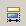
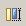
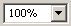
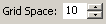

(The SDS buttons on the Button Bar are only visible if a SDS display is open in the editor)
Undo the last action in the editor.
Redo the last action in the editor.
 Delete the selected widget.
 Show / Hide a grid on the editor pane.
 Show / Hide rulers (pixel scale) for the editor.
Show / Hide rulers (pixel scale) for the editor. Activate / Deactivate 'snap to geometry'. This feature makes it easier to position widgets aligend with other widgets. When the feature is active and you move a widget, guidelines will automatically show up when the widget is aligned with another widget, and the widget will snap to those guidelines.
 Align selected widgets to the left.
Align selected widgets to the left. Align selected widgets to the center.
Align selected widgets to the center. Align selected widgets to the right.
 Align selected widgets to the top.
 Align selected widgets to the middle.
 Align selected widgets to the bottom.
Align selected widgets to the bottom. Adjust the width of all selected widgets to the width of the widget selected at last.
 Adjust the height of all selected widgets to the height of the widget selected at last.
Zoom in the edit pane.
Zoom out the edit pane.
 Set zoom factor for the edit pane.
 Set grid space (pixel scale).
Execute the active display in an extra window.